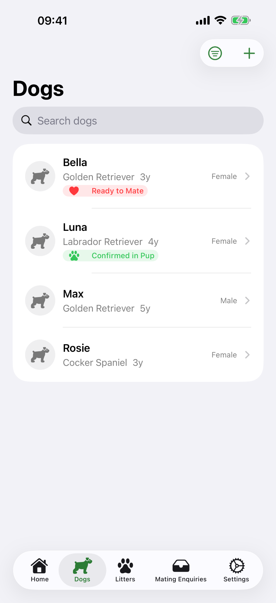
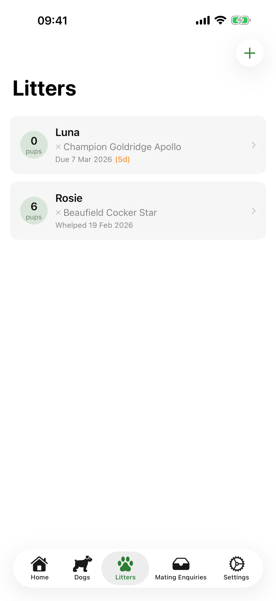
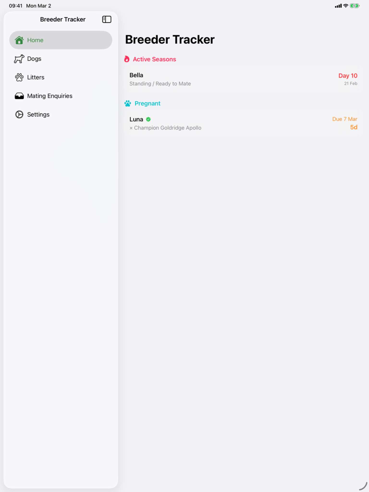
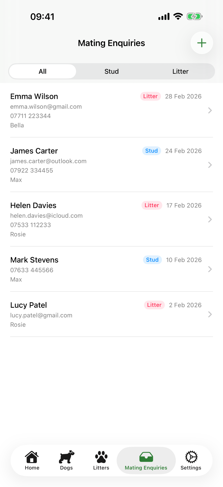

Season and fertility tracking
Log key dates, progesterone results, fertile windows and diary notes for each cycle.
Breeding records, litter tracking and stud management for serious dog breeders.
A clean, simple overview page for the App Store, support and privacy links.
Keep season dates, progesterone results, matings, litters, stud history, buyer enquiries and pup notes together instead of spreading them across notebooks, messages and spreadsheets.
Log key dates, progesterone results, fertile windows and diary notes for each cycle.
Track due dates, whelping details, weights, milestones and early litter progress from one view.
Keep stud history and buyer enquiries tidy, searchable and linked back to the right dog or litter.
A quick look at the current interface across iPhone and iPad.




The pages below are set up for App Store Connect and GitHub Pages, so you can publish quickly and update them later.